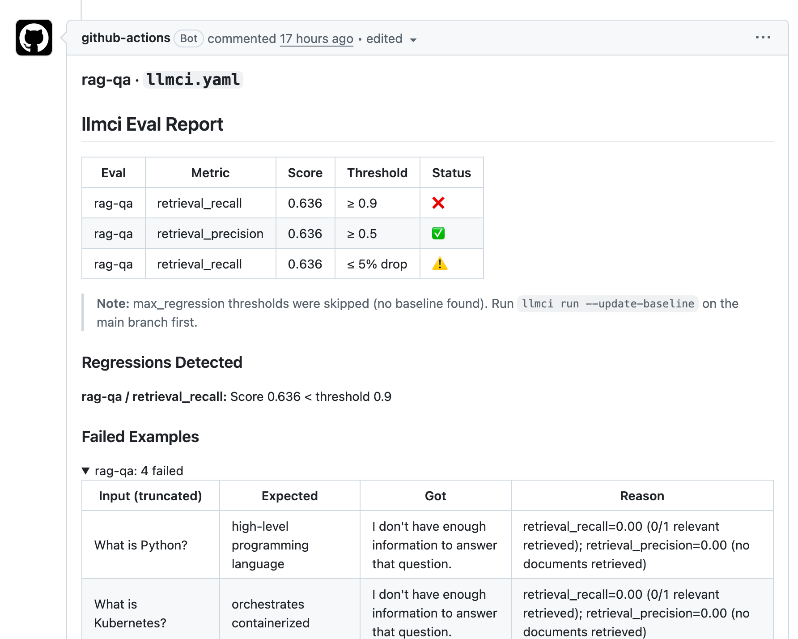

The generator is not the only thing that can regress
The example lives in llmci-cli/llmci-testbed, a public repository with small LLM-powered services. This one is a RAG QA service: retrieve documentation passages, pass them to a LiteLLM-backed generator, and answer user questions.
The focused testbed PR does not change the eval data or the user questions. It changes the retriever. The generator can still call openai/gpt-4o-mini, but if retrieval silently drops useful context, the model has nothing to work with.
services/rag-qa/pipeline/retrieve.py
services/rag-qa/pipeline/generate.py
services/rag-qa/pipeline/run.py
services/rag-qa/evals/qa.jsonl
services/rag-qa/llmci.yaml
.github/workflows/llmci.ymlThe regression looks like precision tuning
The original retriever ranks documents by keyword overlap and returns any document with at least one matching keyword. The pull request adds a minimum-match filter. In review, that can look reasonable: fewer weak matches, less noisy context, cleaner answers.
@@ retrieval scoring
+MIN_KEYWORD_MATCHES = 2
score = sum(1 for kw in entry["keywords"] if kw in query_lower)
-if score > 0:
+if score >= MIN_KEYWORD_MATCHES:
scored.append((score, doc_id, entry["doc"]))
The bug is subtle because the new rule does improve the shape of some retrieval results: weak single-keyword matches disappear. But short, valid questions often contain only one domain term. What is Python? has the important word python. What is Kubernetes? has kubernetes. The new filter drops both before the generator ever runs.
The app still calls a real model
This is not a fake model-path example. In the focused GitHub Actions job, MOCK_LLM is off and the generator calls LiteLLM. The deterministic mock path still exists for cheap local smoke runs, but the PR comment comes from the real-model CI path.
def generate(query: str, context: list[str]) -> str:
if not context:
return "I don't have enough information to answer that question."
combined_context = " ".join(context)
if not is_mock():
model = os.environ.get("RAG_MODEL", "openai/gpt-4o-mini")
prompt = (
"Answer the user's question using only the provided documentation.\n"
"If the documentation does not contain the answer, say you do not have enough information.\n\n"
f"Question: {query}\n\nDocumentation:\n{combined_context}\n\nAnswer:"
)
return complete(prompt, model=model)The pipeline wrapper preserves the structured RAG output llmci needs: the generated answer, retrieved contexts, and retrieved document IDs.
def run_pipeline(input_data: dict) -> dict:
query = input_data["input"]
doc_ids, docs = retrieve(query)
answer = generate(query, docs)
return {
"output": answer,
"contexts": docs,
"retrieved_ids": doc_ids,
}The eval targets retrieval quality
The eval dataset is small and plain. Each row names the user question, the answer text that should be supported, and the document ID that should be retrieved.
{"input": "What is Python?",
"expected": "high-level programming language",
"relevant_ids": ["python"]}
{"input": "Explain Docker containers",
"expected": "containerization",
"relevant_ids": ["docker"]}
{"input": "What is Kubernetes?",
"expected": "orchestrates containerized",
"relevant_ids": ["kubernetes"]}
This is the right level for a RAG gate. You do not need the model to hallucinate before you notice the regression. If the correct document never appears in retrieved_ids, the product is already off the rails.
The config turns retrieval into a CI gate
The RAG judge scores retrieval recall and precision at k=2. Recall has the tighter gate because missing the right document is the failure mode this service cannot tolerate.
target:
command: "python3 pipeline/run.py --input {input_file} --output {output_file}"
evals:
- name: rag-qa
level: pipeline
dataset: ./evals/qa.jsonl
judge:
type: rag
criteria:
- {name: retrieval_recall, type: retrieval_recall, k: 2}
- {name: retrieval_precision, type: retrieval_precision, k: 2}
metrics:
- {name: retrieval_recall, threshold: 0.90, mode: absolute}
- {name: retrieval_precision, threshold: 0.50, mode: absolute}The focused workflow job runs only this RAG config on the demo branch, using the real LiteLLM-backed generator path.
- name: Run focused RAG eval
working-directory: services/rag-qa
env:
OPENAI_API_KEY: ${{ secrets.OPENAI_API_KEY }}
RAG_MODEL: openai/gpt-4o-mini
GITHUB_TOKEN: ${{ secrets.GITHUB_TOKEN }}
LLMCI_REPORT_SLICE: rag-qa/llmci.yaml
run: llmci run --config llmci.yaml --compare-to=origin/mainThe report catches the real failure
The public focused RAG PR fails in exactly the way a reviewer should care about. Precision still passes, so the retriever is not completely broken. Recall fails because useful short questions no longer retrieve their relevant documents.
Below the configured 0.90 recall floor.
Still above the configured 0.50 precision floor.
Questions now retrieve no documents and get no useful answer.

That mix matters. A coarse smoke test might only check whether the app returns text. A prompt-only eval might focus on answer wording after context is supplied. This gate catches the upstream retrieval failure before it becomes an answer-quality mystery.
What review alone can miss
The diff looks like a common retrieval hardening change. Teams often add score thresholds, minimum match counts, metadata filters, recency windows, or reranker cutoffs to reduce noisy context. Each of those changes can improve one slice of quality while cutting away another.
- It runs the full RAG boundary. The command includes retrieval, generation, and structured output.
- It separates recall from precision. The report says what got better, what got worse, and where the real risk is.
- It gives examples. Reviewers see the exact questions that lost context.
- It fits CI. The result is a normal pass/fail check and a pull request comment.
RAG quality is a pipeline property. If retrieval drops the right document, the model can be perfectly reasonable and still produce a bad product outcome.
Try it yourself
Open the testbed repository, inspect services/rag-qa, and apply the retrieval diff above on a branch. The smallest useful version of this pattern is:
- Store representative RAG questions with
relevant_ids. - Emit
output,contexts, andretrieved_idsfrom your app wrapper. - Gate retrieval recall separately from retrieval precision.
- Run
llmci run --config llmci.yaml --compare-to=origin/mainon pull requests.